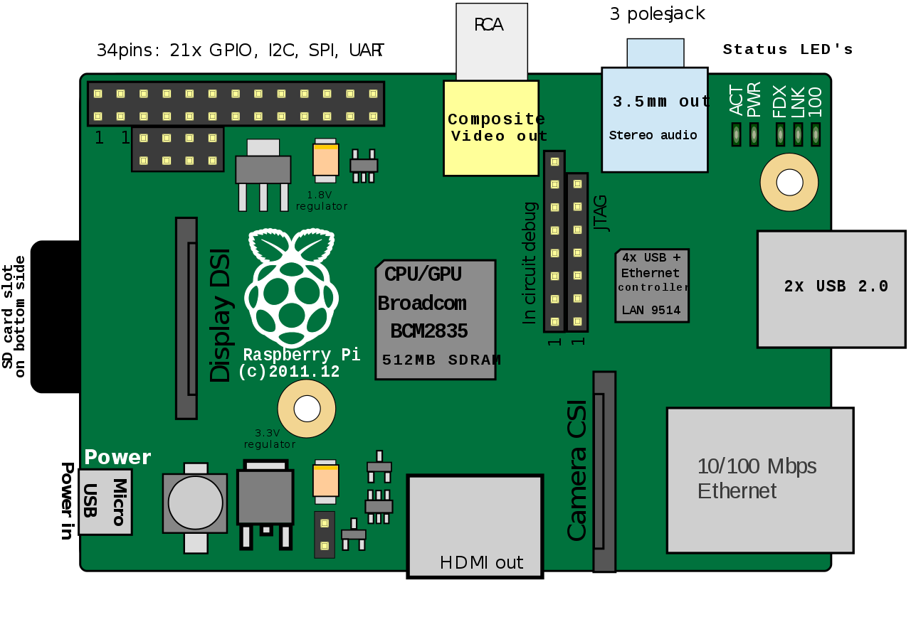

WORK


 -->
-->
With these points in mind, in this Challenge you’ll set yourself up for future success by applying the core skills you've recently learned: flexbox, media queries, and CSS variables. You'll get to practice your new skills while creating something that you'll use during your job search. It’s a win-win that you'll likely be grateful for in the future!
 -->
-->
Have a question or want to work together?